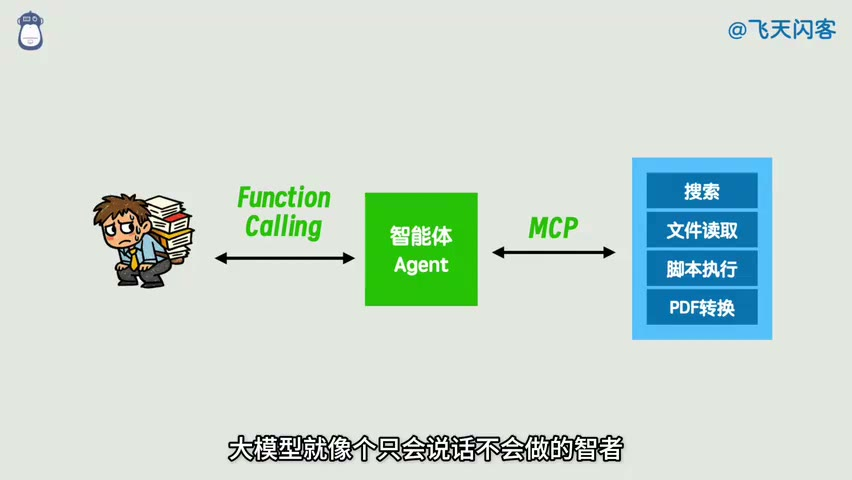

原视频 · 在线回看
点击后联网加载 B 站播放器；本地不下载整段视频。

原视频 · 在线回看
点击后联网加载 B 站播放器；本地不下载整段视频。
来源：飞天闪客｜一口气拆穿 Skill / MCP / RAG / Agent / OpenClaw 底层逻辑 · 14 分 46 秒 · 深度阅读
我们平时打开 AI 聊天窗口，输入一句话，等它回答。用得久了，又会希望它记住刚才的对话，查一份自己没看过的资料，甚至直接处理电脑里的文件。看起来，我们一直在向同一个聊天窗口提要求；实际上，每多一种能力，背后就要有人或程序补上一段工作。
Agent、RAG、MCP、Skill 这些名称，就出现在补齐这些工作的过程中。暂时不用背它们的定义。我们先从最简单的一次问答出发，看见一个具体困难，解决这个困难，再给用到的办法取名字。这样，后面遇到缩写时，你能想到它正在做什么。
先把大语言模型想象成一位擅长处理文字的助手，叫它小 L。大语言模型的英文缩写是 LLM。这里我们只看它最基本的文字输入和输出：你把一份输入交给它，它根据输入生成后续文字。生成时，文字会被分成模型处理的小单位，叫 token；一个 token 可能是一个字，也可能是词的一部分。我们最后看到的整段回答，就是这些单位逐步生成后组成的。
为了理解后面的设计，先把每次调用单独看待：这一次送进去什么，小 L 就依据这些内容回答。假设你先让它解释一篇文章，得到回答后再说“把刚才那段讲得简单一点”。这句话里的“刚才那段”必须有着落。如果新一轮输入只有这句话，小 L 就缺少要改写的那段内容。聊天应用通常会替你把前面的对话一并送进去，所以你不必每次手工复制。这就是连续聊天的体验如何建立起来的。
现在可以认识两个常见词了。你交给模型的任务说明，通常叫提示词，也就是 prompt。模型在这一次回答中能看到的前文、资料和说明等内容，构成这一次的上下文，也就是 context。例如“请把下面这段解释得简单一点”说明了任务，后面附上的那段文字提供了任务所需的材料。只记住任务要求，却没有把材料交过去，模型仍然无法可靠地完成这次改写。
对话越来越长，又会出现一个新问题：每次都把所有历史带上，输入会越来越多。于是应用可以先保存对话，之后挑出相关内容，或者把较早的对话压缩成摘要，再放进新一轮输入。这些做法都可以参与构成记忆功能。这里要分清“保存在某处”和“本次确实交给模型”两个动作。某段话虽然还在历史记录中，假如本次没有送入，模型回答时就无法直接使用那段话。聊天记录和摘要让我们看到了记忆的一种简单实现，实际产品还可能保存偏好、任务状态等其他信息。
接下来，你问了一个需要新资料才能回答的问题。小 L 可以生成“我去查一下”，但仅凭这句话，电脑不会自动开始搜索。我们需要把“提出要做的事”和“实际执行这件事”接起来。最初可以由你来当中间人：小 L 告诉你缺什么资料，你去搜索，把找到的内容复制回来，再请它依据资料回答。整个过程有些笨，但每一步都很清楚。
如果这个过程经常发生，就可以用程序接手你的搬运工作。程序先把问题交给模型；模型提出搜索请求后，程序执行搜索；拿到搜索结果，再把结果交回模型。模型依据新信息继续回答，必要时还可以提出下一项操作。你在外面看到的仍然可能是一次提问和一次最终回答，中间却已经发生了几次往返。Agent，也就是智能体，可以先从这种“模型作出判断，程序执行动作，再把结果送回模型”的配合来理解。
这样看，模型和整个助手应用的区别就明确了。模型负责根据它看到的内容生成回答或操作请求；应用中的程序负责真正联网、读取文件、保存结果，以及组织下一轮输入。说“这个 AI 能搜索”，描述的是整套应用组合起来的能力。判断它有没有完成搜索，也要看实际有没有取得搜索结果，仅看聊天窗口中的一句承诺还不够。
有了这套配合，资料来源也可以从网页换成自己的文档。程序先在文档中寻找与问题相关的内容，把找到的片段放进上下文，再请模型依据这些片段生成回答。这个“先检索资料，再利用资料回答”的做法叫检索增强生成，简称 RAG。它解决的是一个很实际的问题：需要的信息没有包含在这次输入中，我们就先把信息找来。
文档很多时，需要一种办法决定先找哪几段。一种常见选择是把文字转成一组数字，用这些数字表示文字的某些语义特征，再比较问题和各段文字的接近程度。这种表示叫向量，生成表示的过程常称为 embedding。这样可以找出措辞不同、意思却有联系的段落。不过，RAG 的基本过程并不限定必须使用向量；只要是在生成答案前取得相关资料，也可以采用其他检索方式。先把“查来材料再回答”理解清楚，后续再研究某种检索方式为什么会找错，顺序就自然了。
到这里，模型已经会提出搜索要求了。但负责执行的程序怎样知道，模型究竟想查什么？如果模型一会儿说“帮我找找相关资料”，一会儿说“或许应该看看网页”，程序就很难稳定地从这些自由表达里提取操作。一个直接的办法，是让模型按约定格式返回工具名称和所需参数。工具名称告诉程序做哪件事，参数告诉程序这次对什么对象做、采用什么条件。
这就是理解工具调用，也就是 function calling 的入口。模型返回的内容可以采用 JSON 这类便于程序读取的结构，把“要调用哪个工具”“给工具什么输入”放在明确的位置。程序读取这些字段，检查请求，再运行相应工具。等工具返回结果，程序又把结果放进模型的输入。这里最容易混淆的一点是：模型生成了一个工具请求，只完成了提出请求这一步；工具是否真的运行成功，还要看后面的执行结果。
再向外看一层。搜索、读取文档、保存文件这些工具，起初都可以直接写在助手应用里。随着工具变多，有些工具会独立成为一个服务，供多个应用使用。此时助手应用需要知道：这个服务提供什么工具，调用时怎样传入参数，完成后怎样取回结果。如果每个服务各用一套完全不同的说法，连接它们就会很麻烦。MCP，即模型上下文协议，提供了一套共同的交互约定，让应用能够按约定与这样的服务沟通。
两种约定对应的沟通位置不同，可以同时使用。模型向助手程序表达“我要调用哪个工具”，属于工具调用所处理的问题；助手程序再去和外部工具服务通信，可以使用 MCP。知道这两个位置后，就不必把它们理解成争夺同一个岗位的两项技术。一个完整请求可能依次经过模型、助手程序、工具服务，再把结果送回模型。至于界面是聊天窗口、命令行还是桌面助手，只是你从哪里进入这套过程。
现在我们给助手一个完整任务：从英文 PDF 中提取文字，翻译成中文，最后保存成 Markdown 文件。Markdown 可以先理解成一种用简单符号表示标题、段落和列表的文本格式。这个任务至少有三件事要做：先拿到 PDF 里的文字，再翻译，最后把译文写进文件。如果已经有可用的提取和保存程序，真正需要模型进行语言处理的部分，主要就是中间的翻译。
你当然可以每次都向 Agent 描述最终目标，让它自行决定怎么做。但当输入、输出和处理顺序都固定时，每次重新安排一遍就有些重复了。我们可以事先写好顺序：运行提取程序，把提取结果交给模型翻译，再运行保存程序。这样的固定安排叫工作流，也就是 workflow。工作流可以写成代码，也可以在一些工具里通过拖动步骤来配置；有没有可视化界面，并不决定它是否属于工作流。
固定顺序的好处，在这个例子中很容易看到。我们已经知道下一步是什么，就让程序照着做，不必在每一步都重新问模型。模型仍然参与翻译，但流程的走向由预先写好的步骤控制。这里可以把“处理语言内容”和“决定接下来运行哪一步”分开看：一份工作流完全可以在固定步骤中使用模型。
接着把任务改一下：交来的文件可能是 PDF、Word 或 PPT，希望得到的结果可能是 Markdown、HTML 或另一份 PDF。原来那条固定线路就不够用了。可以继续写条件判断，为支持的格式安排不同处理方式；也可以允许模型先理解用户的要求，再选择需要的处理步骤。输入和目标越多样，如何在可预测的步骤与灵活选择之间分配工作，就越值得考虑。
对这类文件处理任务，一个折中的做法是提前准备一组脚本，再写一份说明：每个脚本能处理什么格式，什么时候用它，操作顺序有什么要求，最后怎样检查结果。以后用户再提出翻译文件的要求，助手先读这份说明，辨认这次的文件格式和目标，再选择合适脚本。这样既能复用已经写好的操作，也给具体任务保留了选择空间。
Skill 就可以从这份“可复用的做事说明”来理解。SKILL.md 是说明文件的常见名称；同一目录还可以放相关脚本、模板和参考材料。说明让模型知道应该怎样做，脚本承担其中可以稳定执行的操作。应用若能在合适的时候自动找到并加载这份说明，你就不必每次都在聊天里重复粘贴同一大段要求。
仍然用翻译文件的任务来比较，三种安排的差别就在眼前了。工作流预先规定处理顺序；Skill 提供可复用的方法与资源，让助手根据眼前任务使用；自由安排步骤的 Agent 则可以临时决定更多操作。它们也能组合：Agent 可以读取 Skill，再调用一个已有工作流。读了说明以后，文件仍然需要真正被提取、翻译和保存，所以有 Skill 只说明做法能够被复用，还不能直接说明任务已经完成。
| 用什么安排这次翻译 | 预先准备什么 | 接到文件后怎样继续 |
|---|---|---|
| 固定工作流 | 提取文字、翻译、保存的顺序 | 程序按既定顺序执行各步 |
| Agent 使用 Skill | 文件处理说明、可调用的脚本和模板 | 助手参照说明，选择适合当前格式与目标的操作 |
| Agent 临时安排步骤 | 当前目标、可用工具和必要约束 | 助手决定下一步，查看执行结果，再继续选择 |
任务继续变大时，还可能用到子智能体，也就是 sub-agent。它把一个相对独立的子任务交给另一次单独组织的模型交互，并为子任务准备自己的上下文。这样，主任务不必一直携带子任务的全部中间讨论，可以在完成后接收结果。不过，主任务仍需明确交代要求，并理解返回结果。把任务拆出去会改变信息怎样传递，不能单凭“用了多个 Agent”就判断效果一定更好。
现在再看这张表，里面每一行都对应一个已经遇到过的困难。它适合读完后查找，不需要在开始时背下来。
| 我们遇到的事情 | 对应概念 | 在这个例子中具体做什么 |
|---|---|---|
| 想让系统理解文字并回答 | LLM | 根据本次输入生成后续内容 |
| 想让它知道任务和背景 | prompt、context | 提供要求，以及完成要求所需的资料 |
| 想接着上一轮聊 | 记忆 | 保存信息，并在需要时送回新的输入 |
| 想依据文档回答 | RAG | 找到相关文档片段，再据此生成回答 |
| 想让程序理解操作请求 | function calling | 明确工具名称和参数，供程序读取与执行 |
| 想连接独立的工具服务 | MCP | 约定怎样发现能力、发送请求和接收结果 |
| 想按已知步骤完成翻译 | 工作流 | 预先规定提取、翻译、保存的顺序 |
| 想复用成熟的处理办法 | Skill | 提供说明、脚本及相关资源 |
| 想根据中间结果继续行动 | Agent | 组织模型判断、工具执行和后续交互 |
这些名称能帮助我们描述一套应用，却不自动告诉我们哪种产品好用。对于使用者，真正有感的变化常常很具体：原来要手工复制的资料能否自动取回，原来要反复说明的步骤能否被记住，处理完的文件能否方便找到。减少这些重复劳动，是理解整段讨论的一条主线。
沿着减少重复劳动的方向继续想，配置越来越少、使用越来越方便的助手，可能更容易被普通用户接受。飞天闪客据此预测，未来一些工具会直接包含在助手里，普通用户不必再逐项安装与配置。这个方向值得理解，哪些技术会被淘汰则仍属于个人预测。工具能否互相替代，要看实际需要保留哪些能力；把某个工具写成本地脚本，并不能仅凭这个动作就推断所有使用 MCP 的场景都不再需要协议。
从一次问答到一个能办事的助手，中间增加的是保存信息、找资料、执行操作和组织步骤的程序与约定；每个名称都可以放回这些具体工作中理解。
先看模型这一次能看到什么，再看谁去取得缺少的资料、谁去执行动作。任务需要多步完成时，继续问哪些步骤已经确定、哪些步骤需要根据结果再选择。RAG、工具调用、MCP、工作流和 Skill，就能沿着这些问题逐个找到位置。
回到翻译 PDF 的任务，试着顺着三个动作说一遍：谁把文字从 PDF 中取出，谁完成翻译，谁把译文写进文件。如果助手最后回复“已保存”，你会去哪里确认结果？这个问题帮助我们检查自己是否已经分清生成一段话与执行一次操作。
如果这条过程已经清楚，再把输入换成 Word，问自己要改变哪一步、哪些步骤仍可沿用。你能沿着具体任务作出解释，就已经有了辨认工作流、Skill 和 Agent 各自作用的依据，无需再额外背一组抽象定义。